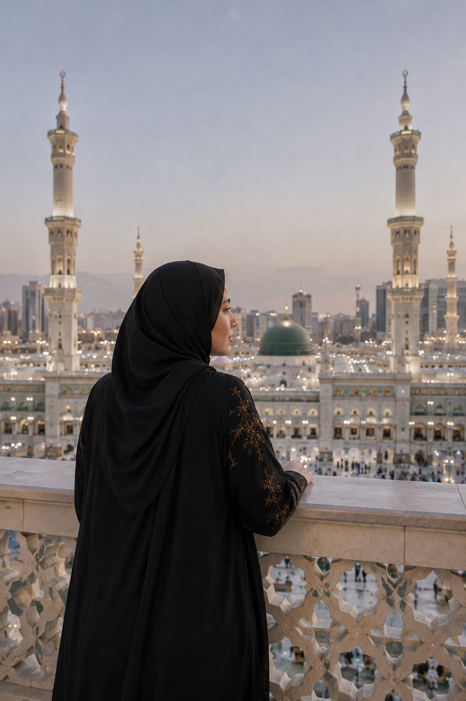
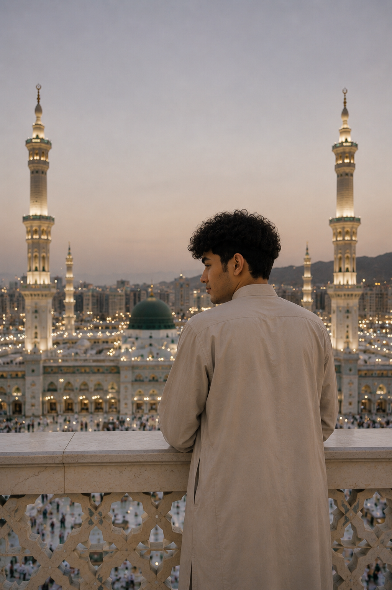

THE BRIDE
Caca
Maritza Hasna Nathania
Putri dari
Nama Ayah & Nama Ibu
THE WEDDING OF
25 • 06 • 2033
Kepada Yth.
Tamu Undangan
BISMILLAHIRRAHMANIRRAHIM
Dengan memohon rahmat dan ridho Allah SWT
25 Juni 2033
“Dan di antara tanda-tanda kekuasaan-Nya ialah Dia menciptakan untukmu pasangan-pasangan dari jenismu sendiri, supaya kamu cenderung dan merasa tenteram kepadanya.”
— QS. Ar-Rum: 21THE BRIDE & GROOM
Dengan penuh kebahagiaan, kami mengundang Bapak/Ibu/Saudara/i untuk hadir dalam hari bahagia kami.

THE BRIDE
Maritza Hasna Nathania
Putri dari
Nama Ayah & Nama Ibu

THE GROOM
Ahmad Rezaie
Putra dari
Nama Ayah & Nama Ibu
COUNTING THE DAYS
SAVE THE DATE
AKAD NIKAH
Waktu akan diinformasikan
Mekkah, Arab Saudi
Tempat akad akan diinformasikan lebih lanjut.
RESEPSI
Waktu akan diinformasikan
Jl. KH Mabruk
RT/RW 01/01
Lihat LokasiOUR MOMENTS
Beberapa momen yang kami abadikan dalam perjalanan menuju hari istimewa.
OUR STORY
Ada kisah yang dimulai tanpa rencana besar. Hanya sebuah pesan sederhana, percakapan yang berlanjut, lalu perlahan berubah menjadi rasa nyaman. Jarak yang membentang ribuan kilometer ternyata tidak selalu mampu memisahkan dua hati yang sama-sama ingin memperjuangkan satu tujuan.
Tahun 2026 menjadi halaman pertama kisah kami. Kami pertama kali saling mengenal melalui Telegram, dari percakapan yang awalnya sederhana hingga menjadi obrolan yang perlahan terasa berbeda. Tidak ada yang tahu bahwa sebuah perkenalan dari layar kecil akan membawa kami sejauh ini. Dari sapaan, cerita tentang hari-hari, tawa, kekhawatiran, sampai hal-hal kecil yang biasanya hanya dibagikan kepada orang yang dipercaya, semuanya menjadi awal dari sesuatu yang belum kami mengerti saat itu.
Kami berada di dua tempat yang berbeda: Indonesia dan Afghanistan. Ada jarak, perbedaan waktu, kesibukan, dan hari-hari ketika percakapan tidak bisa berlangsung sepanjang yang kami inginkan. Namun justru dari jarak itu kami belajar mengenal satu sama lain dengan lebih dalam. Kami belajar menunggu balasan, memahami kesibukan masing-masing, dan tetap menyisihkan waktu hanya untuk bertanya, “Hari ini kamu baik-baik saja?”
Menjalani hubungan dengan jarak yang jauh tidak selalu mudah. Ada malam ketika rasa rindu terasa lebih panjang daripada percakapan, ada hari ketika kami hanya bisa saling menguatkan dari balik layar. Kami tidak bisa bertemu kapan pun kami mau, tidak bisa hadir dalam setiap momen penting, dan tidak bisa menghapus jarak hanya dengan sebuah pelukan. Tetapi kami belajar bahwa hadir tidak selalu berarti berada di tempat yang sama. Kadang hadir berarti mendengarkan, memahami, menjaga kepercayaan, dan tetap memilih orang yang sama meski keadaan tidak sederhana.
Waktu membuat kami semakin mengerti bahwa hubungan bukan hanya tentang momen bahagia. Kami mulai belajar berkomunikasi ketika ada perbedaan, saling memberi ruang ketika lelah, dan kembali mencari jalan ketika keadaan terasa berat. Rindu yang dulu terasa seperti hambatan perlahan berubah menjadi pengingat: ada seseorang di kejauhan yang selalu ingin kami temui dan bahagiakan. Sedikit demi sedikit, kami mulai berbicara bukan hanya tentang hari ini, tetapi juga tentang masa depan.
Setelah melewati begitu banyak percakapan, penantian, dan doa, kami mulai memahami bahwa hubungan ini ingin kami bawa ke arah yang lebih serius. Kami belajar bahwa cinta bukan sekadar perasaan yang datang dan pergi, melainkan keputusan untuk terus berusaha ketika keadaan tidak mudah. Indonesia dan Afghanistan bukan lagi sekadar dua titik yang berjauhan di peta, melainkan dua tempat yang menjadi saksi bagaimana kami menjaga satu cerita yang sama.
Kami mulai menata lebih banyak hal untuk masa depan. Bukan hanya tentang kapan bisa bertemu, tetapi tentang bagaimana kelak kami membangun rumah, keluarga, dan kehidupan yang penuh keberkahan. Setiap rencana terasa seperti langkah kecil menuju satu pintu besar. Di antara doa yang panjang dan harapan yang terus kami jaga, kami percaya bahwa jika Allah mengizinkan, semua jarak yang pernah kami lewati akan menjadi bagian indah dari perjalanan menuju pertemuan yang sebenarnya.
Tahun-tahun berlalu dan kami semakin dekat pada hari yang dulu hanya berani kami bayangkan dalam percakapan. Perjalanan panjang, LDR, perbedaan waktu, rasa rindu, dan semua penantian perlahan menemukan jawabannya. Kami menyadari bahwa perjalanan ini tidak sempurna, tetapi justru di sanalah kami menemukan arti memperjuangkan seseorang. Setiap kali hampir menyerah pada jarak, kami kembali mengingat tujuan yang sama: bukan sekadar bertahan bersama, tetapi sampai pada satu hari ketika kami tidak perlu lagi mengucapkan selamat malam melalui layar dari dua negara yang berbeda.
Dan akhirnya, setelah perjalanan panjang sejak perkenalan di Telegram pada 2026, setelah ribuan pesan, doa, penantian, perbedaan waktu, dan jarak Indonesia — Afghanistan, kami sampai pada satu tujuan yang sama. Hari ketika “kapan kita bertemu?” berubah menjadi “akhirnya kita bersama.” Hari ketika dua keluarga, dua perjalanan, dan dua hati dipertemukan dalam satu niat yang insyaAllah suci. Kami tidak ingin melupakan bagaimana cerita ini dimulai, karena justru dari awal yang sederhana itulah kami belajar menghargai setiap langkah yang membawa kami ke sini. Semoga pernikahan ini menjadi awal perjalanan yang jauh lebih panjang: berjalan berdampingan, saling menjaga, saling menguatkan, dan bersama-sama pulang kepada ridha Allah SWT.
RSVP & WISHES
Berikan doa dan ucapan terbaik untuk Caca & Ahmad.
WEDDING GIFT
Kehadiran dan doa restu Anda adalah hadiah yang paling berarti bagi kami. Jika berkenan memberikan tanda kasih, dapat melalui DANA berikut.
087871475059
Atas nama Caca
TERIMA KASIH
Semoga Allah SWT menyatukan kami dalam sakinah, mawaddah, warahmah.